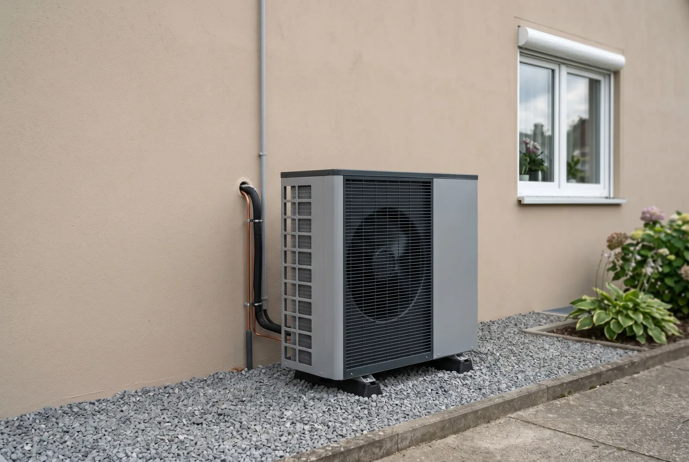

Inhaltsverzeichnis
Das Wichtigste in Kürze
- Unsere Empfehlung: Für die meisten Altbauten ist die Luft-Luft-Wärmepumpe die wirtschaftlichere Wahl – sie heizt die Räume direkt, ohne verlustreichen Hochtemperatur-Wasserkreis, und kostet komplett einen Bruchteil.
- Förderung: Beide Systeme werden über die KfW-Heizungsförderung gleich gefördert – für Förderanträge ab dem 21. Juli 2026 mit 30 Prozent Grundförderung und je nach Boni bis zu 80 Prozent. Bedingung bei Luft-Luft: Das Gerät steht auf der BAFA-Liste und ersetzt die alte Heizung.
- Kosten (EFH-Orientierung): Luft-Luft ca. 10.000 bis 20.000 Euro fürs ganze Haus plus 2.500 bis 5.000 Euro für eine separate Warmwasserlösung; Luft-Wasser ca. 27.000 bis 40.000 Euro installiert.
- 55-Grad-Schwelle: Die Effizienz der Luft-Wasser-Anlage hängt an der Vorlauftemperatur – über 55 Grad steigen die Betriebskosten deutlich. Luft-Luft umgeht den Wasserkreis komplett.
- Ehrlich gesagt: Luft-Luft hat Nachteile – kein Warmwasser, sichtbare Innengeräte, vorhandene Heizkörper bleiben ungenutzt, und viele reine Klima-Splitgeräte stehen nicht auf der BAFA-Liste.
Stand der Angaben (12. Juli 2026): Bundestag und Bundesrat haben am 10. Juli 2026 das neue Gebäudemodernisierungsgesetz (GModG) beschlossen, und die reformierten KfW-Förderbedingungen gelten laut BMWE und KfW für neue Anträge ab dem 21. Juli 2026. Das Gesetz ist jedoch noch nicht verkündet und die geänderte Förderrichtlinie noch nicht im Bundesanzeiger veröffentlicht – alle Zahlen geben den aktuellen Stand des Wissens wieder, ohne Gewähr. Die Förderung steht außerdem unter dem Vorbehalt verfügbarer Bundesmittel; ein Rechtsanspruch besteht nicht. Welche Konditionen für Ihr Vorhaben konkret gelten, prüfen wir gern tagesaktuell für Sie.
Warum die Typfrage im Altbau entscheidend ist
Wer die beste Wärmepumpe für den Altbau sucht, stößt schnell auf zwei grundverschiedene Systeme: die Luft-Luft- und die Luft-Wasser-Wärmepumpe. Beide nutzen die Außenluft als Energiequelle, geben die Wärme aber völlig unterschiedlich ab. Genau dieser Unterschied entscheidet im Bestandsgebäude über Investitionshöhe, Betriebskosten und die Frage, ob das vorhandene Heizsystem weiterverwendet wird oder ungenutzt bleibt.
Im Altbau begegnen uns in der Praxis typischerweise drei Gebäudekategorien: das unsanierte Gründerzeit- oder Vorkriegshaus mit hoher Heizlast, das Nachkriegsgebäude aus den Baujahren 1950 bis 1979 mit teilweise erneuerten Fenstern, und das jüngere Bestandsgebäude der 1980er und 1990er Jahre mit besserer Bausubstanz. Jede dieser Kategorien stellt andere Anforderungen an die Vorlauftemperatur und damit an den Wärmepumpentyp.
Ein verbreiteter Irrtum vorweg: Bei der Förderung unterscheiden sich die beiden Typen nicht. Sowohl Luft-Luft- als auch Luft-Wasser-Wärmepumpen werden über die KfW-Heizungsförderung (Zuschuss 458) bezuschusst – für Förderanträge ab dem 21. Juli 2026 mit 30 Prozent Grundförderung für alle und je nach Einkommen und Boni mit bis zu 80 Prozent der förderfähigen Kosten. Was sich massiv unterscheidet, ist die Investitionshöhe: Eine Luft-Wasser-Anlage kostet im Einfamilienhaus 2026 installiert grob das Doppelte einer Luft-Luft-Lösung. Diese Differenz verschiebt die Wirtschaftlichkeit – und genau deshalb lohnt der ehrliche Systemvergleich.
Gut zu wissen: Ob sich der Umstieg im Bestandsgebäude überhaupt rechnet, hängt stark vom Sanierungszustand ab. Unser Tipp: Wann sich eine Wärmepumpe im Altbau wirklich lohnt erklärt die Grundlagen vor der Typentscheidung.
Kurzprofil Luft-Luft-Wärmepumpe
Eine Luft-Luft-Wärmepumpe entzieht der Außenluft Wärme und gibt sie direkt als warme Luft an die Innenräume ab. Das geschieht über ein Split- oder Multisplit-Gerät: Eine Außeneinheit und ein oder mehrere Innengeräte sind über Kältemittelleitungen verbunden. Es gibt kein wassergeführtes Heiznetz und keinen Pufferspeicher – und genau darin liegt im Altbau ihre Stärke: Der komplette verlustbehaftete Umweg über heißes Heizwasser entfällt.
Als Ganzhaus-Heizung wird das System per Multisplit aufgebaut: mehrere Innengeräte versorgen die Wohnräume, geregelt wird raumweise. Moderne Geräte erreichen hohe SCOP-Werte, weil sie die Luft direkt erwärmen statt einen 55- bis 70-Grad-Wasserkreis zu bedienen – und im Sommer kühlen sie mit. Als Richtwert kalkulieren wir rund 3.000 Euro pro Raum; ein ganzes Einfamilienhaus liegt damit bei etwa 10.000 bis 20.000 Euro (Orientierungswerte, starke Streuung).
Gefördert wird die Luft-Luft-Wärmepumpe über die KfW-Heizungsförderung genauso wie jede andere Wärmepumpe – mit denselben Sätzen und demselben Deckel. Die Voraussetzungen sind sachlich klar: Das Gerät muss in der BAFA-Liste förderfähiger Wärmepumpen stehen, als Heizung dienen und die alte Anlage ersetzen, die SCOP-Mindestwerte erfüllen und seit Januar 2026 mit den Geräuschemissionen mindestens 10 Dezibel unter dem Grenzwert bleiben. Ehrlich benannt gehören auch die Nachteile auf den Tisch: Das System bereitet kein Warmwasser – dafür braucht es eine separate Lösung wie eine Brauchwasser-Wärmepumpe für zusätzlich 2.500 bis 5.000 Euro. Die Innengeräte sind sichtbar an der Wand, vorhandene Heizkörper und Rohrleitungen bleiben ungenutzt, bei verwinkelten Grundrissen steigt die Zahl der Innengeräte – und viele reine Klima-Splitgeräte fehlen auf der BAFA-Liste, womit die Förderung entfällt.
- Wärmeabgabe direkt über erwärmte Luft – kein Hochtemperatur-Wasserkreis, keine Verteil- und Speicherverluste
- Geringe Investition (ca. 10.000–20.000 € fürs EFH) und schnelle Montage, Kühlfunktion inklusive
- KfW-Förderung wie bei jeder Wärmepumpe – Bedingung: BAFA-Listung, Heizungsersatz, SCOP- und Geräuschanforderungen
- Ehrliche Nachteile: kein Warmwasser (separat lösen), sichtbare Innengeräte, Heizkörper bleiben ungenutzt, verwinkelte Grundrisse brauchen mehr Innengeräte
Kurzprofil Luft-Wasser-Wärmepumpe
Die Luft-Wasser-Wärmepumpe entzieht der Außenluft ebenfalls Wärme, überträgt diese aber auf das Heizwasser. Damit speist sie das bestehende Heiznetz und versorgt Heizkörper oder eine Fußbodenheizung genauso wie die Warmwasserbereitung. Genau deshalb ist sie der am häufigsten eingebaute Typ im Altbau – was aber nicht automatisch heißt, dass sie dort auch die wirtschaftlichste Lösung ist.
Es gibt sie in zwei Varianten. Die Standardvariante arbeitet wirtschaftlich, solange die benötigte Vorlauftemperatur moderat bleibt. Die Hochtemperatur-Variante erreicht auch Vorlauftemperaturen von 70 Grad und mehr und ist damit das Sicherheitsnetz für unsanierte Gebäude mit kleinen Heizkörpern – allerdings auf Kosten der Effizienz, denn je heißer das Heizwasser, desto mehr Strom braucht die Anlage. Hinzu kommen Verteil- und Speicherverluste im Wassersystem, die bei der Luft-Luft-Lösung schlicht nicht existieren.
Ihre echten Stärken: Sie nutzt vorhandene Heizkörper und Rohrleitungen weiter, integriert die Warmwasserbereitung und ist im Haus unsichtbar. Gefördert wird sie – wie die Luft-Luft-Wärmepumpe – über die KfW-Heizungsförderung: für Förderanträge ab dem 21. Juli 2026 mit 30 Prozent Grundförderung für alle; Selbstnutzer mit Anspruch auf Klimageschwindigkeits- und Einkommensbonus erreichen je nach Einkommen zwischen 46 und 80 Prozent der förderfähigen Kosten. Der größte Nachteil ist der Preis: 2026 kostet eine Luft-Wasser-Anlage im Einfamilienhaus installiert real etwa 27.000 bis 40.000 Euro (Orientierungswerte), und die Installation ist aufwendig, da das System in das Heiznetz eingebunden, hydraulisch abgeglichen und auf die Heizlast ausgelegt werden muss.

Gut zu wissen: Die Förderhöhe hängt für Anträge ab dem 21. Juli 2026 von Bonus-Bausteinen wie dem Einkommens- und dem Klimageschwindigkeitsbonus ab; der frühere Effizienzbonus für Wärmepumpen mit natürlichem Kältemittel wie R290 ist entfallen. Unser Tipp: So beantragen Sie die Förderung für die Wärmepumpe im Altbau Schritt für Schritt.
Effizienz und COP im Altbau-Betrieb
Um die Wirtschaftlichkeit zu beurteilen, lohnt der Blick auf zwei Kennzahlen. Der COP, der Coefficient of Performance, beschreibt die Effizienz unter Laborbedingungen zu einem festen Zeitpunkt. Die Jahresarbeitszahl, kurz JAZ, ist aussagekräftiger, weil sie das Verhältnis von erzeugter Wärme zu eingesetztem Strom über ein ganzes Jahr im realen Betrieb abbildet. Für die Betriebskosten zählt allein die JAZ.
Hier spielt die Luft-Luft-Wärmepumpe ihren Systemvorteil aus: Sie erwärmt die Raumluft direkt, ohne den Umweg über heißes Heizwasser, und erreicht so Werte zwischen 3,5 und 4,0 – moderne Geräte weisen entsprechend hohe SCOP-Werte aus. Dazu kommt die raumweise Regelung: Geheizt wird dort, wo Wärme gebraucht wird. Eine Luft-Wasser-Anlage liegt im typischen Altbaubetrieb mit höherem Temperaturbedarf realistisch bei 2,5 bis 3,5; eine Hochtemperatur-Wärmepumpe, die sehr heißes Heizwasser bereitstellt, sinkt auf eine JAZ von etwa 2,0. Verteil- und Speicherverluste im Wassersystem kommen bei Luft-Wasser noch obendrauf.
Der wichtigste technische Parameter für die Luft-Wasser-Anlage ist die Vorlauftemperatur. Als grobe Faustregel gilt die Schwelle von 55 Grad: Bleibt die benötigte Vorlauftemperatur darunter, arbeitet sie effizient und wirtschaftlich. Liegt sie dauerhaft darüber, fällt die JAZ und die Betriebskosten steigen – dann braucht es größere Heizflächen, eine Hochtemperatur-Lösung als Sicherheitsnetz oder eben ein System, das den Wasserkreis komplett umgeht. Genau an dieser 55-Grad-Hürde scheitert die Wirtschaftlichkeit der Luft-Wasser-Anlage in vielen unsanierten Altbauten – die Luft-Luft-Wärmepumpe kennt diese Hürde nicht.
Gut zu wissen: Soll es eine Luft-Wasser-Anlage werden, senken Sie die benötigte Vorlauftemperatur am wirksamsten über größere Heizflächen und eine Teildämmung, bevor Sie die Anlage auslegen. Unser Tipp: die richtige Sanierungsreihenfolge: erst dämmen, dann Wärmepumpe.
Luft-Luft oder Luft-Wasser? Wir rechnen es für Ihr Haus durch.
EffiNova erstellt die raumweise Heizlastberechnung für die optimale Auslegung, prüft die BAFA-Listung der angebotenen Geräte – und klärt, welcher Zuschuss nach der Reform für Ihr Gebäude drin ist.
Kostenlose ErsteinschätzungEinbauaufwand und Kosten im Vergleich
Der Einbauaufwand unterscheidet sich grundlegend. Eine Luft-Luft-Anlage kommt ohne Rohrsystem und ohne Eingriff in das Heiznetz aus. Außeneinheit und Innengeräte werden montiert und über Kältemittelleitungen verbunden, die Installation ist in wenigen Tagen erledigt. Die Warmwasserbereitung muss jedoch separat gelöst werden – zum Beispiel über eine Brauchwasser-Wärmepumpe für zusätzlich 2.500 bis 5.000 Euro.
Bei der Luft-Wasser-Anlage steckt der Aufwand in der Systemintegration. Die Anlage wird in das vorhandene Heiznetz eingebunden, ein hydraulischer Abgleich sorgt für die gleichmäßige Verteilung, und vorhandene Heizkörper werden auf ihre Eignung geprüft und gegebenenfalls getauscht. Dieser Mehraufwand schlägt sich im Preis nieder – dafür bleibt die vorhandene Hydraulik in Betrieb und das Warmwasser ist integriert.
Die folgende Übersicht zeigt die typischen Investitionskosten vor Förderung im direkten Vergleich (Orientierungswerte für ein Einfamilienhaus, 2026):
| Kriterium | Luft-Luft (Multisplit) | Luft-Wasser |
|---|---|---|
| Investition vor Förderung (EFH) | ca. 10.000–20.000 € (Ganzhaus, Richtwert ~3.000 €/Raum) | ca. 27.000–40.000 € installiert |
| KfW-Förderung (Anträge ab 21.07.2026) | 30–80 %, Gerät muss auf der BAFA-Liste stehen | 30–80 % |
| Warmwasser | Separate Lösung, z. B. Brauchwasser-WP (+2.500–5.000 €) | Integriert |
| Heizkörper nutzbar | Nein (eigene Innengeräte) | Ja |
| Installationsaufwand | Gering, wenige Tage | Höher (Einbindung ins Heiznetz) |
Zwei Rechenbeispiele machen den Unterschied greifbar (Förderanträge ab dem 21. Juli 2026, Selbstnutzer mit Klimageschwindigkeitsbonus, also 30 + 16 = 46 Prozent; Orientierungswerte fürs Einfamilienhaus): Eine Luft-Luft-Multisplit-Anlage für 16.000 Euro erhält 46 Prozent Zuschuss, also 7.360 Euro – es bleiben 8.640 Euro Eigenanteil; mit einer Brauchwasser-Wärmepumpe für rund 3.500 Euro (als Einzelfall gesondert zu prüfen, hier konservativ ohne Förderung gerechnet) liegt das Gesamtprojekt bei rund 12.100 Euro. Ein Luft-Wasser-Projekt für 35.000 Euro ist auf 28.000 Euro förderfähige Kosten gedeckelt; 46 Prozent ergeben 12.880 Euro Zuschuss und 22.120 Euro Eigenanteil. Selbst im besten Fall – 80 Prozent Fördersatz – stehen 3.200 Euro Eigenanteil für die Luft-Luft-Anlage (plus Warmwasserlösung) gegen 12.600 Euro bei Luft-Wasser. Wie sich der Eigenanteil über einen Kredit abbilden lässt, erklären wir gesondert.
Luft-Luft-Wärmepumpe und Förderung: Was gilt seit der Reform?
Hier räumen wir mit einem hartnäckigen Missverständnis auf: Die Luft-Luft-Wärmepumpe wird über die KfW-Heizungsförderung (Zuschuss 458) genauso gefördert wie jede andere Wärmepumpe – gleiche Fördersätze (30 Prozent Grundförderung plus Boni), gleicher Deckel (maximal 80 Prozent auf höchstens 28.000 Euro förderfähige Kosten, für Förderanträge ab dem 21. Juli 2026). Wie Sie die Förderung Schritt für Schritt beantragen, zeigt unser Leitartikel. Die Voraussetzungen sind sachlich, keine Hürdenliste: Das reversible Split- oder Multisplit-Gerät muss in der BAFA-Liste förderfähiger Wärmepumpen geführt sein, als Heizung dienen und die alte Anlage ersetzen sowie die SCOP-Mindestwerte erfüllen. Nur reine Kühl-Klimageräte ohne Heizfunktion und ohne BAFA-Listung erhalten keine KfW-Förderung – und genau da liegt der Praxis-Fallstrick: Viele Splitgeräte aus dem Klima-Regal fehlen auf der Liste. Prüfen Sie die Listung deshalb vor der Bestellung; wir übernehmen das im Rahmen der Angebotsprüfung für Sie.
Für beide Systemtypen gilt zudem eine verschärfte Anforderung an die Lautstärke: Nach den technischen Fördervoraussetzungen (Stand Januar 2026) sind Wärmepumpen seit dem 1. Januar 2026 nur noch förderfähig, wenn die Geräuschemissionen des Außengeräts mindestens 10 Dezibel unter dem gesetzlichen Grenzwert liegen – zuvor genügten 5 Dezibel. Achten Sie bei der Geräteauswahl deshalb nicht nur auf die Effizienz, sondern auch auf die Schallwerte im Datenblatt.
Und das Timing? Wer die Förderung nutzen will, profitiert von den aktuellen Sätzen noch bis zum 31. Januar 2027: Im Standardfall (Selbstnutzer mit Klimageschwindigkeitsbonus) sind das 46 Prozent auf höchstens 28.000 Euro förderfähige Kosten, also 12.880 Euro Zuschuss. Ab dem 1. Februar 2027 sinkt der Zuschuss im selben Beispiel auf 42 Prozent von 27.250 Euro (11.445 Euro), ab dem 1. August 2027 auf 38 Prozent von 26.500 Euro (10.070 Euro). Panik ist unnötig – die Förderung läuft weiter –, aber Warten kostet real Geld.
Gut zu wissen: Den Eigenanteil nach Förderung können Sie zinsgünstig über die KfW finanzieren. Unser Tipp: So funktioniert die Finanzierung der Wärmepumpe über den KfW-Kredit.
Heizverteilsystem: Welcher Typ funktioniert womit?
Das vorhandene Heizverteilsystem ist ein wichtiger Faktor bei der Typwahl – aber anders, als oft dargestellt: Es entscheidet nicht, ob eine Luft-Luft-Wärmepumpe infrage kommt, sondern ob sich der Erhalt des Wassersystems lohnt.
Sind im Altbau gut dimensionierte Heizkörper oder sogar eine Fußbodenheizung vorhanden und sollen diese weiter genutzt werden, spricht das für die Luft-Wasser-Wärmepumpe – die Fußbodenheizung ist ihr Idealfall, weil sie mit niedrigen Vorlauftemperaturen arbeitet. Reichen die Heizflächen nicht aus, kommt die Hochtemperatur-Variante ins Spiel, allerdings mit spürbar schlechterer Effizienz. Und genau an diesem Punkt lohnt die ehrliche Gegenrechnung: Wer für einen effizienten Luft-Wasser-Betrieb erst Heizkörper tauschen oder dauerhaft mit hohen Vorlauftemperaturen leben müsste, fährt mit einer Luft-Luft-Lösung oft wirtschaftlicher – auch wenn die alten Heizkörper dann ungenutzt an der Wand bleiben.
Die Luft-Luft-Wärmepumpe braucht kein wassergeführtes System: Sie heizt über eigene Innengeräte, raumweise geregelt. Das macht sie im klassischen Altbau zur vollwertigen Ganzhaus-Option – mit einer Einschränkung: Bei verwinkelten Grundrissen mit vielen kleinen Räumen steigt die Zahl der nötigen Innengeräte und damit der Preis. In offenen oder kompakten Grundrissen spielt sie ihre Stärken dagegen voll aus. Wo gar kein Heizsystem existiert, etwa im Anbau oder Einzelraum, ist sie ohnehin gesetzt.
- Heizkörper/Hydraulik sollen weiter genutzt werden, Warmwasser integriert: Luft-Wasser, bei Bedarf mit Hochtemperatur-Option
- Fußbodenheizung vorhanden: Luft-Wasser Standard mit ihrer besten Effizienz
- Heizkörpertausch nötig oder dauerhaft hohe Vorlauftemperatur: Luft-Luft meist die wirtschaftlichere Alternative
- Kein Heizsystem im Anbau oder Einzelraum: Luft-Luft als Einzellösung
Entscheidungsmatrix nach Gebäudetyp
Die wichtigsten Hinweise verdichten sich, wenn man sie nach Baualter ordnet. Die folgende Matrix gibt eine erste Orientierung, ersetzt aber keine individuelle raumweise Heizlastberechnung für Ihr Gebäude. Diese Berechnung übernehmen wir gern für Sie.
| Gebäudetyp | Empfehlung |
|---|---|
| Gründerzeit / Vorkrieg, unsaniert | Luft-Luft raumweise (mehrere Innengeräte); Luft-Wasser nur als Hochtemperatur- oder Hybridlösung mit Effizienz-Abstrichen |
| Baujahr 1950–1979 | Luft-Luft meist die wirtschaftlichere Wahl; Luft-Wasser, wenn Heizkörper weiter genutzt und Warmwasser integriert werden sollen |
| Baujahr 1980–1990er | Beide gut machbar: Luft-Luft mit dem geringeren Invest, Luft-Wasser Standard mit guter Effizienz am vorhandenen Heiznetz |
| Einzelräume und Anbauten ohne Heiznetz | Luft-Luft als wirtschaftliche Einzellösung |
In Gründerzeit- und Vorkriegshäusern mit hoher Heizlast gerät die Luft-Wasser-Anlage schnell in den ineffizienten Hochtemperatur-Betrieb oder braucht eine Hybridlösung mit zweitem Wärmeerzeuger – die Luft-Luft-Wärmepumpe umgeht dieses Problem, verlangt bei verwinkelten Grundrissen aber entsprechend viele Innengeräte. In Gebäuden der Baujahre 1950 bis 1979 ist Luft-Luft wegen des deutlich geringeren Invests meist die wirtschaftlichere Wahl; wer die vorhandenen Heizkörper weiter nutzen und das Warmwasser integrieren will, fährt mit einer Luft-Wasser-Standardanlage gut, sofern die Heizflächen ausreichen. Jüngere Bestandsbauten ab den 1980ern erlauben beide Wege ohne Verrenkungen – hier entscheidet die Prioritätensetzung zwischen Investitionshöhe, Warmwasser-Komfort und Optik der Innengeräte.
Gut zu wissen: Ob Ihr Gebäude grundsätzlich für eine Wärmepumpe geeignet ist, lässt sich vorab grob einschätzen. Unser Tipp: der Selbstcheck zur Wärmepumpen-Eignung im Altbau.
Fazit: Unsere Empfehlung — und wie EffiNova Sie begleitet
Für die meisten Altbauten ist die Luft-Luft-Wärmepumpe aus unserer Sicht die wirtschaftlichere Empfehlung. Sie heizt die Räume direkt, ohne den verlustreichen Hochtemperatur-Wasserkreis samt Verteil- und Speicherverlusten, kostet fürs ganze Einfamilienhaus mit ca. 10.000 bis 20.000 Euro nur einen Bruchteil der 27.000 bis 40.000 Euro einer installierten Luft-Wasser-Anlage (Orientierungswerte) – und wird über die KfW-Heizungsförderung genauso bezuschusst: für Förderanträge ab dem 21. Juli 2026 mit 30 Prozent Grundförderung und je nach Einkommen und Boni bis zu 80 Prozent. Im Standardfall bleiben so rund 12.100 Euro Gesamteigenanteil inklusive Warmwasserlösung – gegenüber gut 22.000 Euro beim Luft-Wasser-Projekt.
Die Luft-Wasser-Wärmepumpe bleibt trotzdem eine sinnvolle Wahl – nämlich dann, wenn Sie vorhandene Heizkörper und Hydraulik weiter nutzen möchten, das Warmwasser integriert sein soll und keine sichtbaren Innengeräte gewünscht sind. Ehrlich bleibt auch die Gegenseite: Die Luft-Luft-Lösung braucht eine separate Warmwasserlösung, zeigt ihre Innengeräte offen und setzt zwingend ein Gerät von der BAFA-Liste voraus – viele reine Klima-Splitgeräte stehen dort nicht.
Welcher Typ und welche Auslegung für Ihr Haus wirklich passen, lässt sich seriös erst nach einer individuellen Gebäudeanalyse sagen. Genau hier setzen wir an: Wir bei EffiNova erstellen die raumweise Heizlastberechnung für die optimale Auslegung, prüfen die BAFA-Listung und Förderfähigkeit der angebotenen Geräte und empfehlen Ihnen die wirtschaftlichste Lösung, statt Ihnen ein Standardprodukt zu verkaufen.
Welche Wärmepumpe ist die beste für Altbauten?
Für die meisten Altbauten ist die Luft-Luft-Wärmepumpe aus unserer Beratungspraxis die wirtschaftlichere Wahl: Sie heizt die Räume direkt, ohne den verlustreichen Hochtemperatur-Wasserkreis, kostet komplett deutlich weniger und wird über die KfW-Heizungsförderung genauso bezuschusst wie andere Wärmepumpen. Die Luft-Wasser-Wärmepumpe bleibt sinnvoll, wenn Sie vorhandene Heizkörper und Hydraulik weiter nutzen und die Warmwasserbereitung integrieren möchten. Welche Lösung im Einzelfall passt, klärt eine raumweise Heizlastberechnung.
Welche Marke Wärmepumpe ist die beste?
Es gibt nicht die eine beste Marke für jeden Altbau. Entscheidend ist, dass das Modell zur Heizlast Ihres Gebäudes passt – und dass es in der BAFA-Liste förderfähiger Wärmepumpen geführt wird, sonst entfällt der KfW-Zuschuss. Gerade bei Luft-Luft-Geräten trennt dieser Punkt förderfähige Heiz-Wärmepumpen von reinen Klimageräten. Wir empfehlen, nicht über die Marke, sondern über die zum Gebäude passende Leistung, die Effizienz (SCOP) und die Förderfähigkeit zu entscheiden.
Was kostet eine Wärmepumpe für 120 qm Altbau?
Für einen Altbau in Einfamilienhaus-Größe liegt eine Luft-Wasser-Wärmepumpe 2026 installiert typischerweise bei 27.000 bis 40.000 Euro (Orientierungswerte, starke Streuung). Eine Luft-Luft-Multisplit-Lösung fürs ganze Haus kostet mit rund 10.000 bis 20.000 Euro deutlich weniger – als Richtwert etwa 3.000 Euro pro Raum – plus 2.500 bis 5.000 Euro für eine separate Warmwasserlösung wie eine Brauchwasser-Wärmepumpe. Beide Systeme werden über die KfW-Heizungsförderung mit 30 bis 80 Prozent der förderfähigen Kosten bezuschusst, sofern das Gerät auf der BAFA-Liste förderfähiger Wärmepumpen steht.
In welchen Häusern scheitert die Wärmepumpe?
Schwierig wird es für Luft-Wasser-Wärmepumpen vor allem in unsanierten Gebäuden mit sehr hoher Heizlast und kleinen Heizkörpern, die im Betrieb dauerhaft Vorlauftemperaturen deutlich über 55 Grad benötigen. Dann sinkt die Jahresarbeitszahl und die Betriebskosten steigen. In solchen Fällen helfen größere Heizflächen, eine Teildämmung oder eine Hochtemperatur-Wärmepumpe – oder Sie umgehen den Wasserkreis komplett mit einer Luft-Luft-Wärmepumpe, die die Räume direkt erwärmt. Eine vorherige raumweise Heizlastberechnung zeigt, welcher Weg für Ihr Gebäude passt.
Welche Wärmepumpe ist 2026 die beste für einen Altbau?
2026 ist die Luft-Luft-Wärmepumpe aus unserer Sicht für die meisten Altbauten die wirtschaftlichste Lösung: geringere Investition, keine Verluste über einen Hochtemperatur-Wasserkreis und seit der Förderreform dieselben KfW-Fördersätze wie für andere Wärmepumpen. Die Luft-Wasser-Wärmepumpe ist die bessere Wahl, wenn vorhandene Heizkörper weiter genutzt und die Warmwasserbereitung integriert werden sollen. Erst eine individuelle Gebäudeanalyse mit raumweiser Heizlastberechnung zeigt, welches System und welche Auslegung wirklich passen.
Wird eine Luft-Luft-Wärmepumpe 2026 gefördert?
Ja. Luft-Luft-Wärmepumpen werden über die KfW-Heizungsförderung (Zuschuss 458) genauso gefördert wie andere Wärmepumpen: für Förderanträge ab dem 21. Juli 2026 mit 30 Prozent Grundförderung plus Boni, je nach Einkommen bis zu 80 Prozent der förderfähigen Kosten von maximal 28.000 Euro. Voraussetzungen: Das Gerät steht in der BAFA-Liste förderfähiger Wärmepumpen, dient als Heizung und ersetzt die alte Anlage, erfüllt die SCOP-Mindestwerte und bleibt nach den technischen Fördervoraussetzungen (Stand Januar 2026) mit den Geräuschemissionen des Außengeräts mindestens 10 Dezibel unter dem gesetzlichen Grenzwert. Reine Kühl-Klimageräte ohne BAFA-Listung und Heizfunktion erhalten dagegen keine KfW-Förderung.